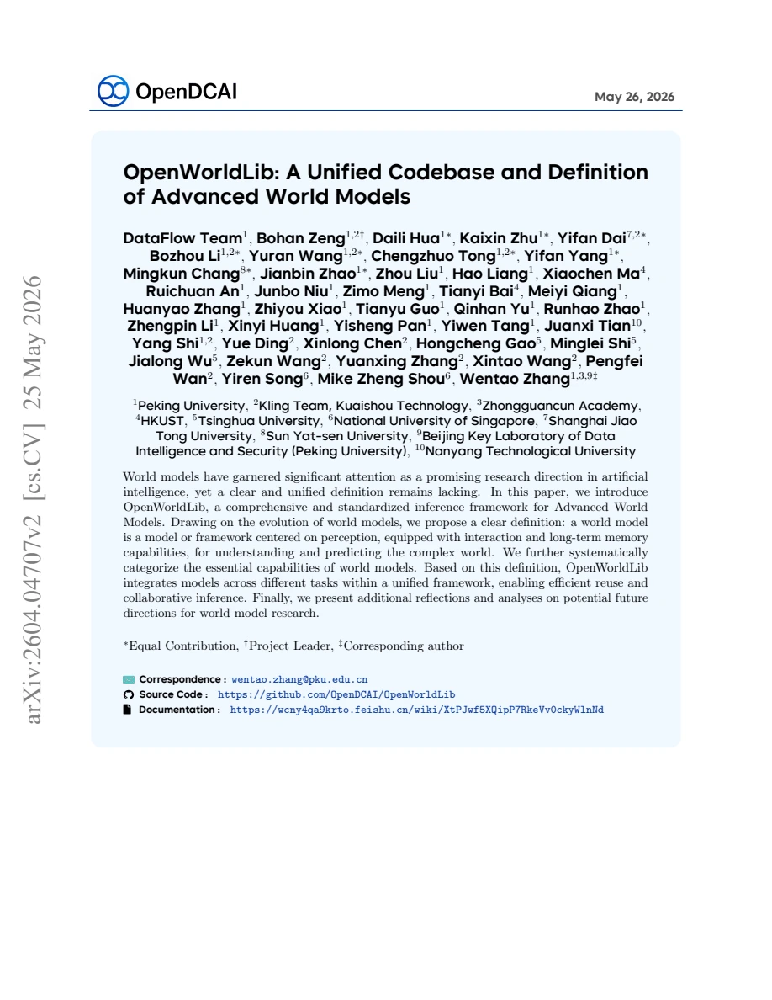
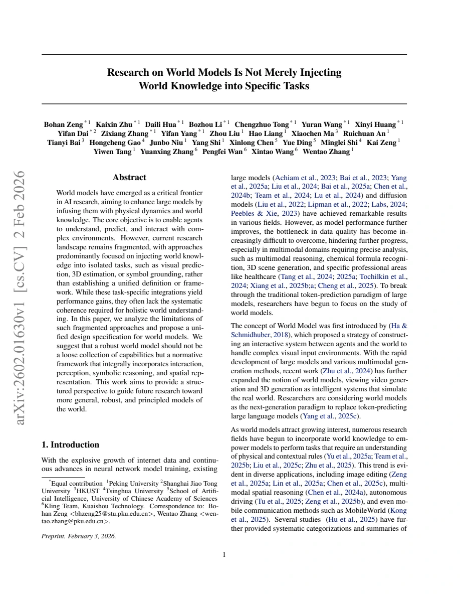
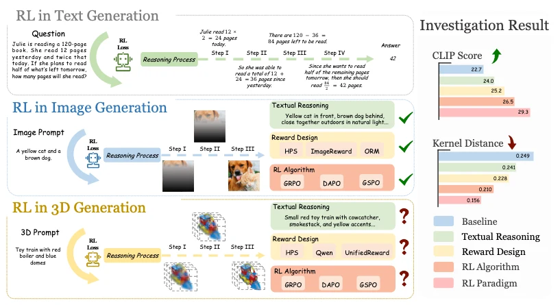
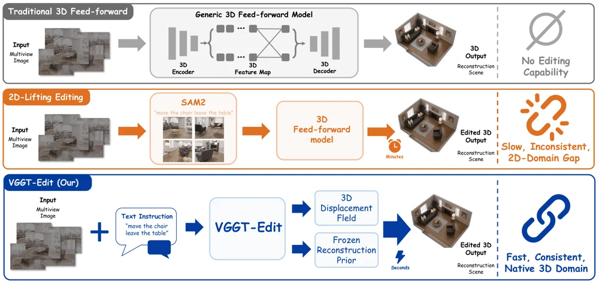
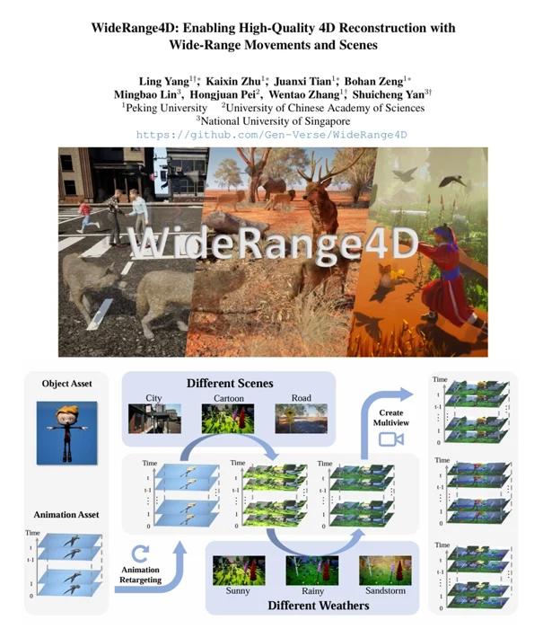
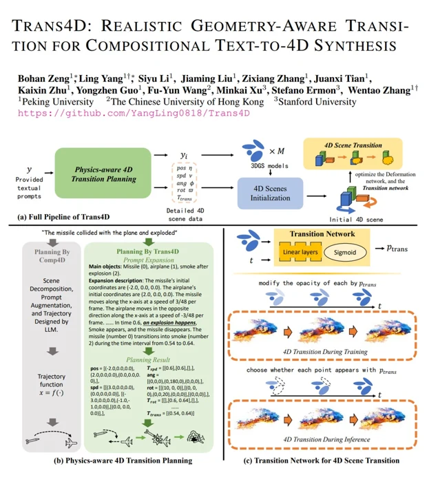

OpenWorldLib: A Unified Codebase and Definition of Advanced World Models
A shared codebase for building and testing world models.
World models & generative AI
Learning to generate and understand
the world in 3D and 4D.
I am an MSAI student at Nanyang Technological University and a research assistant at Peking University, working with Prof. Wentao Zhang. I received my B.S. in Artificial Intelligence with First Class Honours from Hong Kong Baptist University.
My research focuses on world models and 3D/4D generation.
I am looking for a PhD position. Feel free to email me ↗
Latest updates
Updates from my work.
Scroll for earlier updates ↓We open-sourced GameFactory-3A, a toolkit for creating games with AI agents.
Started my MSAI studies at Nanyang Technological University.
Joined Unity to work on avatar assets and motion retargeting.
3DGen-R1 accepted to CVPR 2026.
Presented WideRange4D at TechBeat .
Joined Peking University as a Research Assistant, working with Prof. Wentao Zhang.
Publications & projects

A shared codebase for building and testing world models.

OpenDCAI
An open-source toolkit that uses AI agents to create game assets and build playable games. It supports Unity, UE5, Godot, three.js, and Blender.

Studying how rewards and reinforcement learning improve text-to-3D generation.

Editing 3D scenes from text while keeping shapes consistent across views.

A benchmark and method for reconstructing 4D scenes with large movements.

Creating 4D scenes with realistic transitions between objects and actions.
Jul 2026 — Present
3D / 4D · Internship
Working on 3D/4D content and animation.
Mar 2024 — Present
Research Assistant · Advisor: Prof. Wentao Zhang
Research on world models and 3D/4D generation.
Aug 2026 — Aug 2027
Expected completion
Master of Science in Artificial Intelligence (MSAI)
Sep 2021 — Jun 2025
B.S. in Artificial Intelligence · First Class Honours